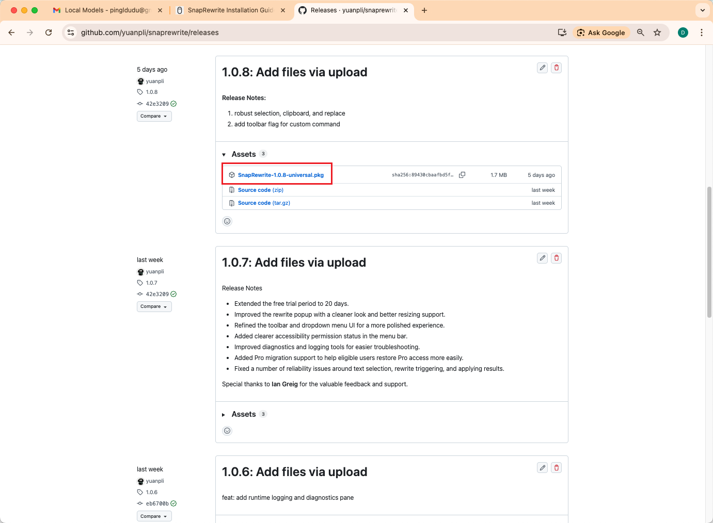

01
Download the latest installer
Get the newest SnapRewrite macOS package from GitHub Releases.
- Open the SnapRewrite Releases page.
- Find the latest release and locate the macOS installer package.
- Click the installer file and wait for the download to finish.
If multiple files are listed, choose the installer package from the latest release that is meant for macOS.

Download the newest release
On the Releases page, open the latest release and download the macOS installer package.